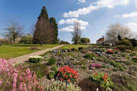

Areál botanické zahrady se rozkládá v Trojské kotlině na rozloze cca 30 ha. Její nejznámější
částí je skleník
Fata Morgana, ale k zahradě patří také venkovní expozice včetně vinice. Skleník Fata Morgana je
celoročně
otevřen úterý až neděle, pondělí je zavíracím dnem.
V roce 1992 byla otevřena úvodní expozice na ploše 3 ha, která je upravena jako park s kolekcemi
drobných
cibulovin, trvalek, letniček a léčivých, vřesovištních, suchomilných a vlhkomilných rostlin, se
skalničkovým
skleníkem a oddělením dendrologie s domácími i cizokrajnými zakrslými jehličnany.
Dnes si lze prohlédnout, kromě úvodní expozice, i meditační japonskou zahradu s původními druhy
japonských
rostlin, geografickou expozici rostlin Turecka a Středomoří a pod ní sbírku kosatců. Od dubna 2004 je
pro
veřejnost zpřístupněna jedna z nejkrásnějších pražských vinic – vinice sv. Kláry a tropický skleník Fata
Morgana.
Mapa celého areálu zde

| Otevírací doba |
Venkovní expozice:
Březen - Říjen
PO - NE
9 - 19 (v závislosti na ročním období)
Skleník Fata Morgana
Březen - Říjen
ÚT - NE, svátky
9 - 19 (v závislosti na ročním období)
|
| Vstupné |
Dospělí 150Kč
Děti 3–15 let; žáci a studenti do 26 let s platným průkazem či ISIC 100Kč
Senioři nad 60 let, ZTP 75 Kč
Senioři 70+ 1 Kč
Děti 0–2 roky, Kočárek, ZTP/P zdarma
|